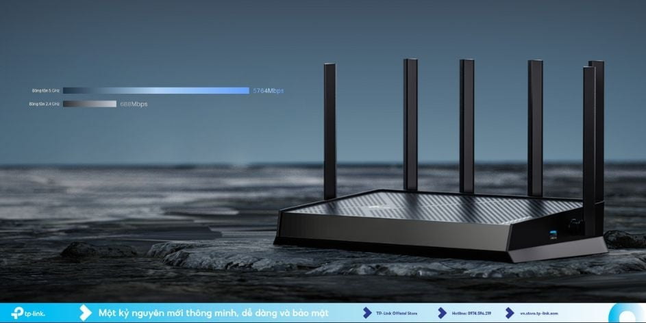

Wifi 2 băng tần là công nghệ mạng không dây phát sóng đồng thời trên hai dải tần 2.4GHz và 5GHz, giúp tối ưu tốc độ và độ phủ sóng, giảm nghẽn mạng khi có nhiều thiết bị kết nối cùng lúc.

1. Phân biệt Wi-Fi 2 băng tần và 1 băng tần
| Tiêu chí | Wi-Fi 1 băng tần (Chỉ 2.4GHz) | Wi-Fi 2 băng tần (2.4GHz & 5GHz) |
|---|---|---|
| Tốc độ | Cơ bản, dễ giật lag khi đông thiết bị | Nhanh, mượt mà (nhờ có thêm sóng 5GHz) |
| Độ phủ sóng | Rộng, xuyên tường tốt | Linh hoạt (Sóng xa 2.4GHz + Sóng mạnh 5GHz) |
| Trải nghiệm | Lướt web, đọc báo cơ bản | Chơi game online, xem phim 4K mượt mà |
2. Ưu và nhược điểm
Ưu điểm:
- Giảm nhiễu sóng và loại bỏ hiện tượng quá tải mạng.
- Tốc độ truyền tải dữ liệu cực nhanh trên dải tần 5GHz.
- Router tự động phân bổ thiết bị vào băng tần phù hợp để tối ưu trải nghiệm.
Nhược điểm:
- Sóng 5GHz có phạm vi ngắn, khả năng xuyên tường kém hơn 2.4GHz.
- Chi phí mua cục phát router thường cao hơn loại 1 băng tần.
3. Mẹo chọn mua và sử dụng tối ưu
- Chọn mua: Nên ưu tiên các bộ router có chuẩn Wi-Fi 5 hoặc Wi-Fi 6 đời mới. Hãy chú ý diện tích nhà để chọn loại có số lượng anten phát sóng phù hợp.
- Vị trí đặt: Đặt cục phát ở trung tâm nhà, vị trí trên cao, thoáng đãng. Tránh đặt gần các vật cản kim loại, góc khuất hoặc lò vi sóng.
- Cách kết nối: Điện thoại hay tivi ở gần cục phát thì kết nối vào sóng 5GHz để lấy tốc độ tối đa. Các thiết bị ở xa hoặc phòng bị ngăn nhiều tường thì dùng sóng 2.4GHz cho ổn định.
Kết luận: Nếu không gian của bạn có nhiều thiết bị thông minh (điện thoại, máy tính, smarthome...) thì việc nâng cấp lên router Wi-Fi 2 băng tần là một khoản đầu tư vô cùng xứng đáng để dứt điểm tình trạng mạng quay vòng vòng!